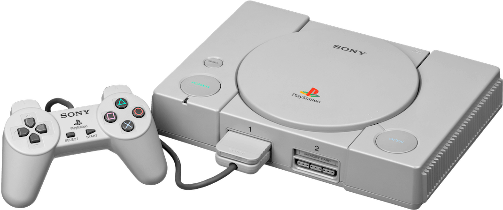
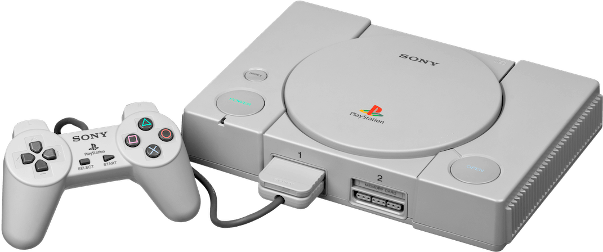

A 80-as, és 90-es években a videojáték ipar virágzott.
De ezek még csak kezdetlegesnek nevezhetők az itt látható konzolhoz képest.
Mivel ekkoriban még csak 2 dimenziós játékokkal lehetett játszani.
Viszont 1994-ben csoda történt.
A SONY piacra dobta az első videojáték konzolját, a PlayStationt.
Ez szakított a hagyományokkal, több dologban is egyszerre.
Elsőként számolt le a játékkazettákkal, a helyüket átvették a CD-k.
Ez a konzol 3 dimenziós játékok futtatására is képes volt.
Japánban adták ki először, de később Európában, és Amerikában is megjelent.
Eszméletlenül sikeres konzol volt, és minden eladási rekordot megdöntött.
A siker titka kettő dologban rejlett: CD-ROM technológia és 3D játékok futtatása.
Összesen több, mint ezer játékot adtak ki rá.
Többek között olyan klasszikusokat, mint a Crash Bandicoot sorozat, és Gran Turismo.
Igazán sok exklúzív játék a PlayStation-ön látott napvilágot.

 
